Analiza rješenja · JOI Spring Camp 2020 · Dan 1
Ukusni hamburgeri
O ovom članku
Tekst je prijevod službene japanske prezentacije rješenja, preoblikovan u članak. Slajdovi su ugrađeni kao slike; natpis pod svakim slajdom je prijevod teksta na njemu. Dijelovi označeni kao trenerska napomena nisu u izvornoj prezentaciji — dodani su da popune korake koje slajdovi preskaču ili samo skiciraju.
Slajdovi
Uvod
izvorni slajdovi 1–2
-
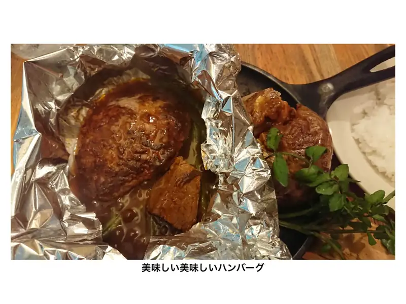
1Naslovni slajd: Ukusni hamburgeri (Hamburg Steak). -
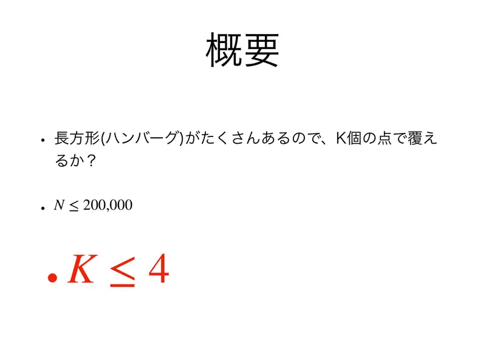
2Sažetak: zadano je mnogo pravokutnika (hamburgera); može li se svaki pogoditi jednom od $K$ točaka? $N \le 200\,000$, $K \le 4$.
← → tipke ili klik na sliku
$K = 1$ podzadaci 1, 5
Slajd
izvorni slajd 3
-
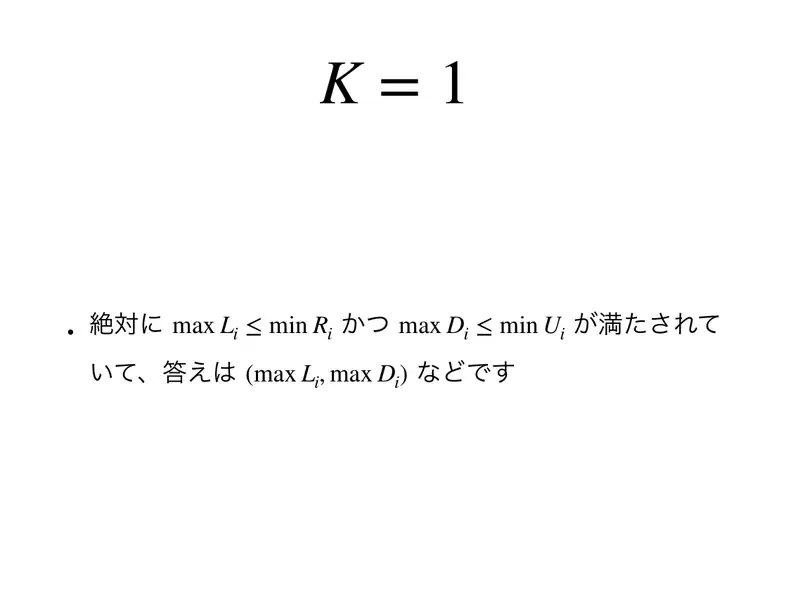
3Nužno je $\max L_i \le \min R_i$ i $\max D_i \le \min U_i$, a odgovor je npr. $(\max L_i, \max D_i)$.
$K = 2, 3$ podzadaci 2, 3, 6, 7
Koraci algoritma
Bitni pravokutnik i kutovi
izvorni slajdovi 4–7
-
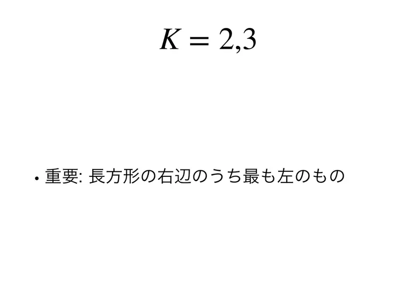
4Važno: promotri najljeviji desni rub među svim pravokutnicima. -
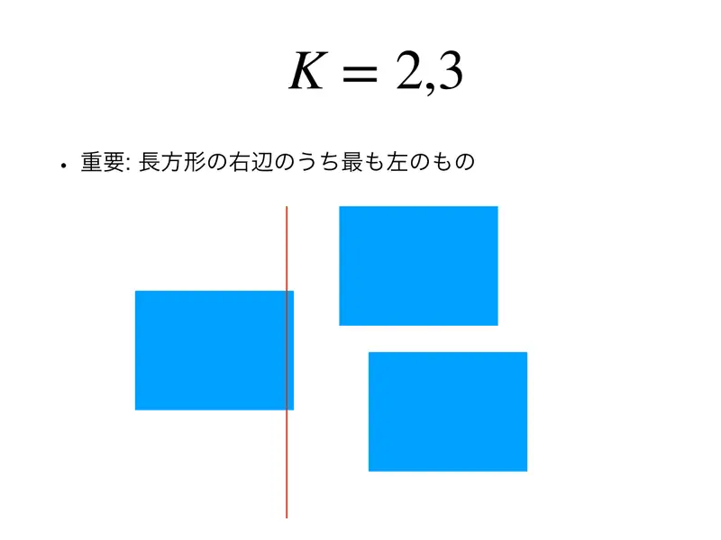
5Crvena crta je $x = \min R_i$. Pravokutnik čiji je to desni rub mora biti pogođen točkom lijevo od crte ili na njoj; tu točku smijemo pomaknuti na crtu. -
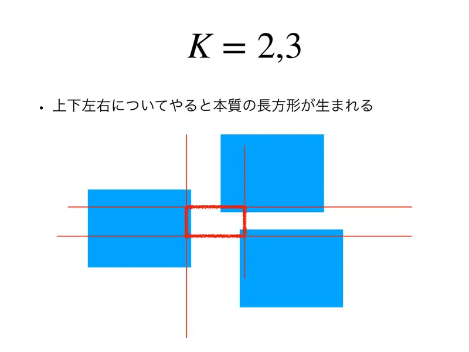
6Ponovimo za sve četiri smjera (najdesniji lijevi rub, najniži gornji rub, najviši donji rub) — nastaje bitni pravokutnik (crveni). -
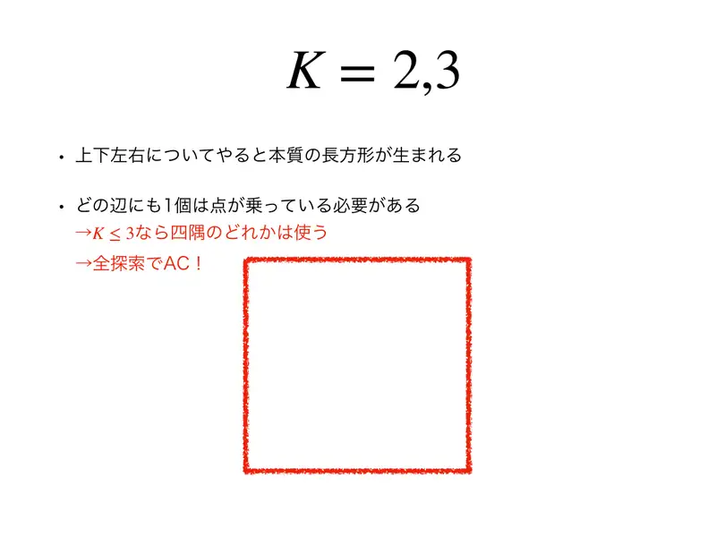
7Na svakoj stranici bitnog pravokutnika mora ležati bar jedna točka. Za $K \le 3$ dakle koristimo neki od četiri kuta → iscrpna pretraga po kutovima daje AC!
← → tipke ili klik na sliku
$K = 4$ podzadaci 4, 8
Slajd
izvorni slajd 8
-
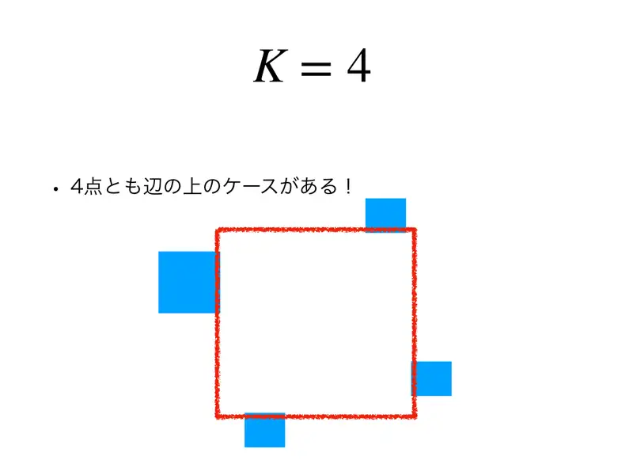
8Postoji slučaj u kojem su sve četiri točke na stranicama, nijedna u kutu! Na slici svaki plavi pravokutnik viri preko jedne stranice, pa svaka stranica treba svoju točku.
Slajdovi
Što je stvarno teško
izvorni slajdovi 9–10
-
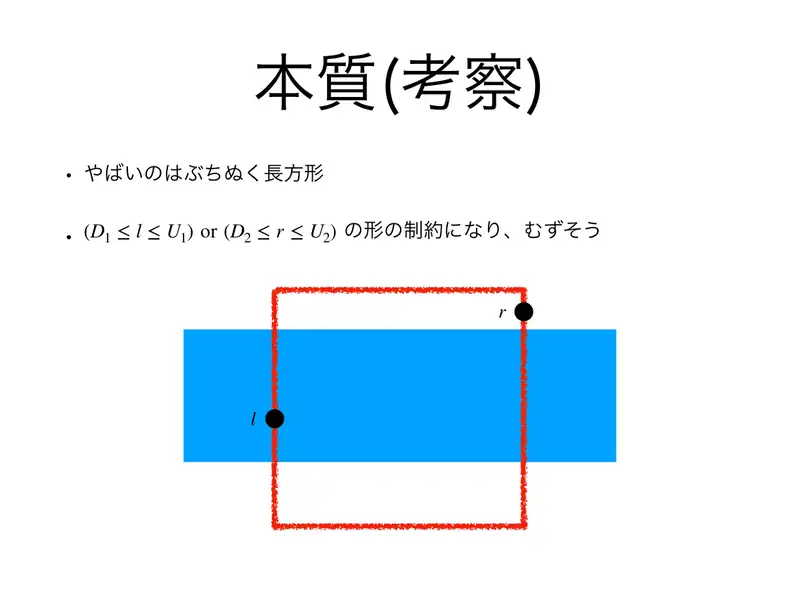
9Problematični su pravokutnici koji probijaju bitni pravokutnik (plavi, od lijeve do desne stranice). Uvjet za njih je $(D_1 \le l \le U_1) \lor (D_2 \le r \le U_2)$ — disjunkcija, što izgleda teško. -
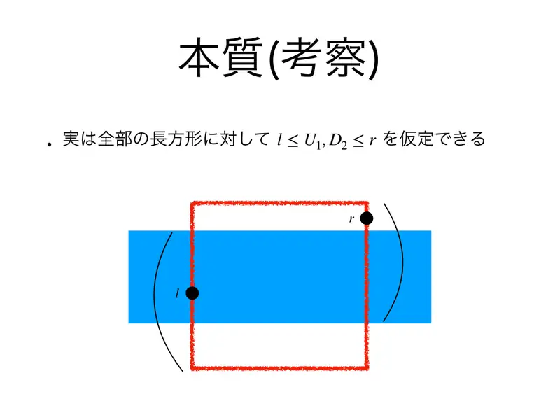
10Zapravo za sve takve pravokutnike smijemo pretpostaviti $l \le U_1$ i $D_2 \le r$ (točka na lijevoj stranici je „ispod” gornjeg ruba, na desnoj „iznad” donjeg): simetrijom/zrcaljenjem svodimo na jedan slučaj.
← → tipke ili klik na sliku
Koraci algoritma
Dva bitna uzorka i pohlepni redoslijed
izvorni slajdovi 11–12
-
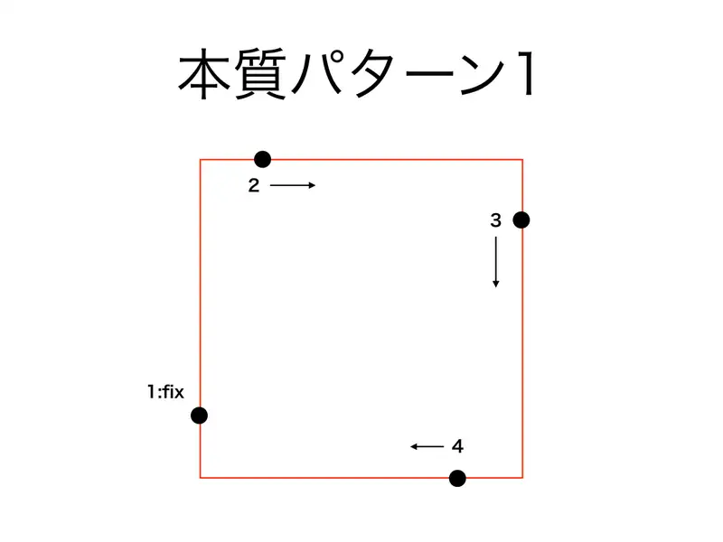
11Uzorak 1. Točku 1 (lijeva stranica) fiksiramo; zatim točku 2 (gornja) guramo što više udesno, točku 3 (desna) što više prema dolje, točku 4 (donja) što više ulijevo — kružni redoslijed. -
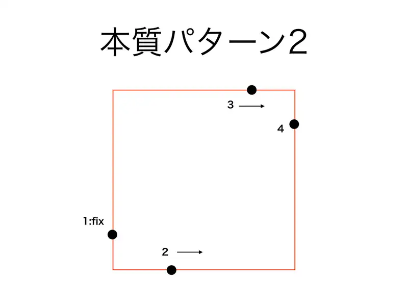
12Uzorak 2. Točku 1 fiksiramo; točku 2 (donja) guramo udesno, točku 3 (gornja) udesno, točku 4 (desna) prema dolje.
← → tipke ili klik na sliku
Slajd
izvorni slajd 13
-
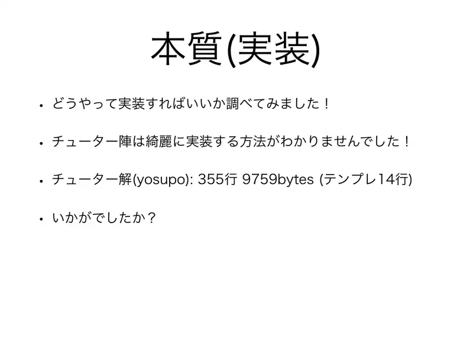
13Autori: „Istražili smo kako to implementirati — tutori nisu našli lijep način! Tutorsko rješenje (yosupo): 355 redaka, 9759 bajtova (od čega 14 redaka predložak).”
Slajd
izvorni slajd 14
-
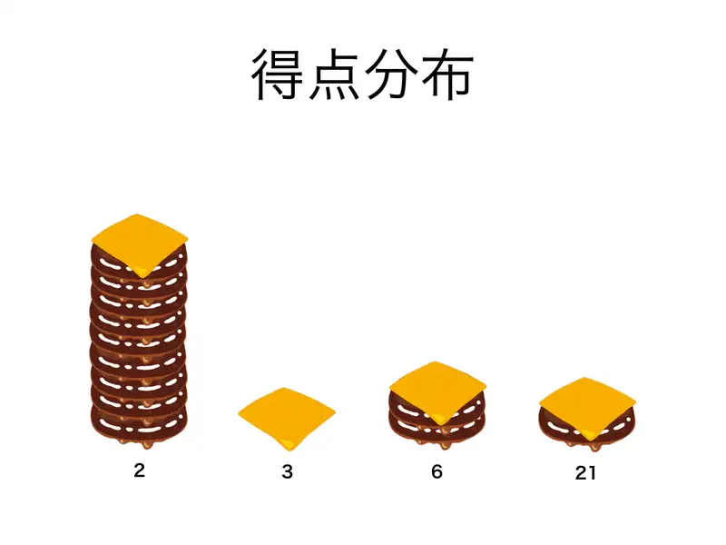
14Distribucija bodova sudionika (histogram); prosjek $4{,}4$ — najteži zadatak kampa.
Sažetak
- Bitni pravokutnik $[\min R, \max L] \times [\min U, \max D]$: sve točke smijemo staviti na njegov rub, po jednu na svaku stranicu.
- $K \le 3$ ili neki kut u upotrebi: iscrpna pretraga po kutovima s rekurzijom.
- $K = 4$ bez kutova: svaki pravokutnik daje disjunkciju najviše dvaju intervalskih uvjeta → 2-SAT nad varijablama „$l \le v$”.